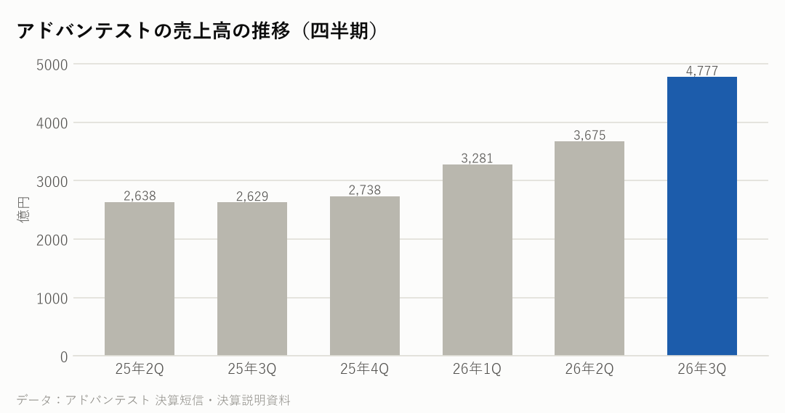
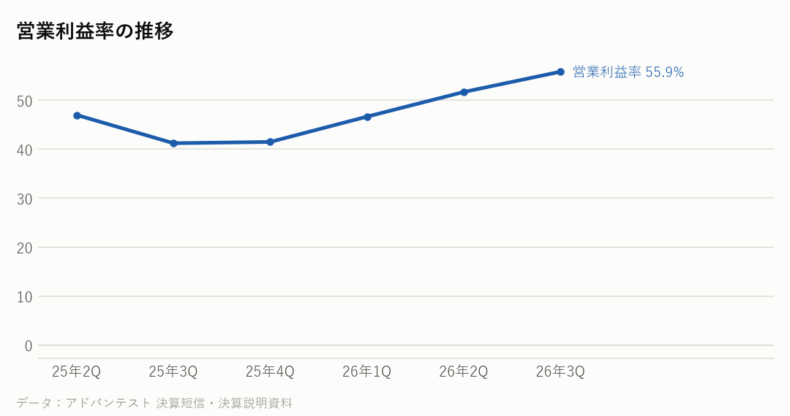

6857｜2026年7〜9月期の決算｜決算発表 2026年10月28日
アドバンテストの決算：売上82%増で四半期の過去最高、通期予想を引き上げ
7〜9月期の売上高は前年同期比82%増の4,777億円、営業利益は約2.5倍の2,668億円で、どちらも四半期で過去最高だった。AI向けの半導体を検査する装置（テスター）の需要が強く、通期の予想を売上高1兆8,630億円、営業利益9,670億円に引き上げた。
主な数字（2026年7〜9月期）
| 今回 | 前年同期 | 前年比 | |
|---|---|---|---|
| 売上高 | 4,777億円 | 2,629億円 | +81.7% |
| 営業利益 | 2,668億円 | 1,084億円 | +146.1% |
| 営業利益率 | 55.9% | 41.2% | |
| 純利益 | 1,933億円 | 796億円 | +142.8% |
事業ごとの売上（4〜9月の上期）
| 部門 | 売上 | 前年比 |
|---|---|---|
| テストシステム（半導体の検査装置） | 7,702億円 | +61.2% |
| サービス他 | 750億円 | +53.7% |

会社の見通し（2027年3月期・通期、引き上げ）
| 売上高（通期） | 1兆8,630億円（7月時点 1兆7,140億円） |
|---|---|
| 営業利益（通期） | 9,670億円（同 8,460億円） |
| 純利益（通期） | 7,415億円（同 6,600億円） |
- 通期の予想は、7月時点から売上高を1,490億円、営業利益を1,210億円引き上げた。10月〜3月の下期は、売上高1兆178億円、営業利益率50.1%の計画。
- SoC（AI向けの半導体など）のテスターの伸びは、ASIC（特定の用途向けに作るAI半導体）やCPUなど、AI関連が中心になると説明した。
- 2027年も、注文が作れる量を上回る状態が続くと見ている（会社の見方）。
- 上限2,800億円の自社株買いを発表した。中間配当は49円（前年は29円）。
もうけの力

日本の半導体関連の会社と比べると
各社の直近の四半期。在庫の日数は「在庫が売上原価の何日分か」。
| 会社 | 決算期末 | 売上高 | 前年比 | 粗利益率 | 営業利益率 | 設備投資/売上 | 在庫の日数 |
|---|---|---|---|---|---|---|---|
| アドバンテスト | 2026-09 | 4,777億円 | +81.7% | ― | 55.9% | ― | ― |
| 東京エレクトロン | 2026-09 | 9,351億円 | +48.4% | 47.8% | 31.6% | ― | ― |
| キオクシア | 2026-09 | 24,800億円 | +453.2% | ― | 80.4% | ― | ― |
| イビデン | 2026-09 | 1,393億円 | +42.1% | ― | 23.9% | ― | ― |
| 村田製作所 | 2026-09 | 5,885億円 | +20.9% | ― | 25.1% | ― | ― |
NasdaqWhy の視点：データから読み取れる注目点
決算資料と各社の公式データを並べて読み取れることです。将来を予想するものではありません。
- 営業利益率は55.9%で、1年前の41.2%から上がった。
- SoCテスターの年間の生産能力は5,000台を超え、1万台にする目標を当初の予定より前倒しで進めている（決算説明資料より）。
- 9月末の在庫（棚卸資産）は3,524億円で、3月末の2,317億円から約1.5倍に増えた。
- テスターは、エヌビディアなどが設計し、TSMCなどが作るAI半導体や、HBMなどのメモリーの検査に使われる。サプライチェーンでは、製造装置（後工程・検査の装置）にあたる。
次に確認したい決算・予定
- エヌビディアの決算（11月下旬の見込み）：AI半導体の売上の伸びが、検査装置の需要のもとになる。
- TSMCの月ごとの売上（毎月10日ごろ）：AI半導体の生産の動き。
- アドバンテストの次の決算（2027年1月下旬の見込み）：下期の計画どおりに進んでいるか。
関連リンク
出典：アドバンテスト 決算短信・決算説明資料（2026年10月28日）
※情報提供のみ。投資判断はご自身でお願いします。※Nasdaq Whyは独立した情報メディアです。Nasdaq, Inc.およびその関連会社とは関係ありません。